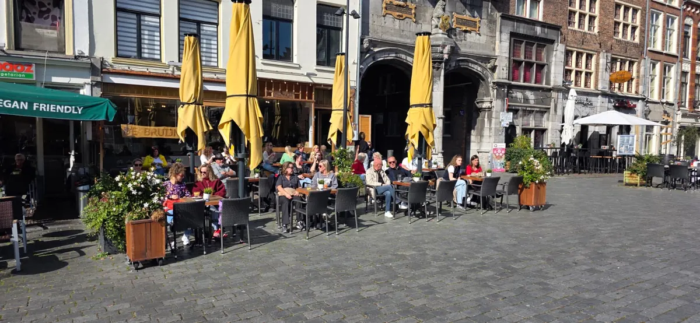

Home › Lunchrooms en ontbijt in Nijmegen › New Dutch
Lunchroom
New Dutch
Zin om even op adem te komen tijdens het winkelen? Boven in de Marikenstraat, vlak naast het monument De Schommel, vind je de lunchroom van New Dutch en Zeezicht. Die twee zaken zijn samengegaan en zitten nu op één plek.
Op zonnige dagen zit je op het ruime terras in de schaduw van grote kastanjebomen. In het voorjaar en najaar zitten er verwarmde kussens op de stoelen, dus ook op frissere dagen kun je prima buiten zitten. Binnen is plek voor zo'n 85 gasten, en de kaart is groot genoeg om voor iedereen iets lekkers te vinden.
Je kunt er elke dag overdag terecht, op zondag vanaf het middaguur. Reserveren doe je door te mailen of te bellen, maar je kunt ook gewoon even binnenlopen.
Contact en openingstijden
- AdresMarikenstraat 46, 6511 PX Nijmegen Kaart
- Openingstijdenma-za 10:00-17:00
zo 12:00-17:00
(volgens de eigen website) - KeukenLunchroom
- Goed om te wetenterraslunch
- Contactnewdutchstreetfood.nl
0243889661 - ReviewsBekijk de reviews op Google Maps
- Gegevens: © OpenStreetMap-bijdragers en Overture Maps. Klopt er iets niet? Laat het weten.
Hier vind je New Dutch
Kaart: © OpenStreetMap-bijdragers
Meer lunchrooms in Nijmegen

UitgelichtDe Bruijn Lunchen op de MarktGrote Markt 21, 6511 KA NijmegenlunchontbijtafhalenBekijk aanbod Lunch Café WijckVoorstadslaan 130, 6541 SV Nijmegenlunchkindvriendelijkvegetarisch An - Bairro AltoAnnie Van Velzenhof 1, 6663 RK Lentontbijtlunch Anne&MaxLange Hezelstraat 13, 6511 CA Nijmegenterrasontbijtlunchafhalen